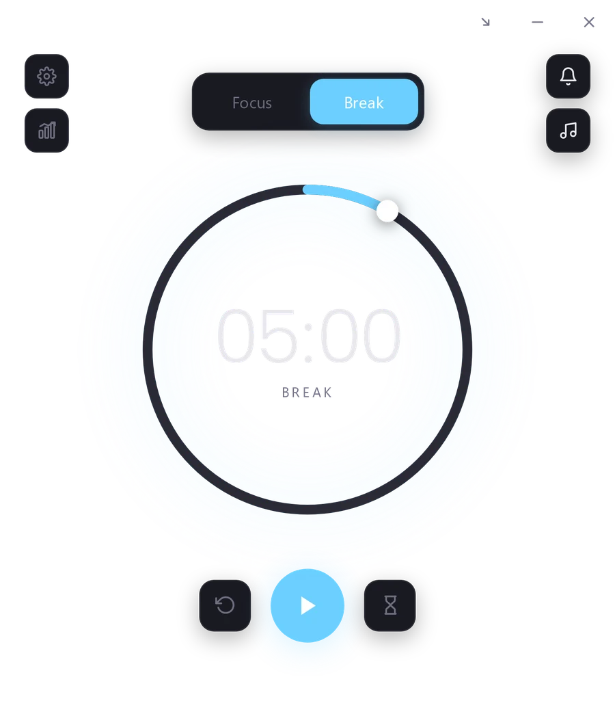

See where your focus time goes.
See your focus time by week, month, and year. Use an optional Google account if you want to sync your progress and settings across PCs.

A Pomodoro timer for Windows with custom sessions, background sounds, and a Mini Mode that stays in view.
Free for Windows 10 and 11 (64-bit)


Mini Mode
Shrink the app to a floating window. Keep the time and controls above your notes, a PDF, or whatever you’re working on.

See your focus time by week, month, and year. Use an optional Google account if you want to sync your progress and settings across PCs.
Choose from nine ambient sounds, from rain to brown noise. Pick one of six session alarms and adjust its volume separately.

Adjust your focus and break lengths, enable overtime, and save custom colors in light or dark themes.